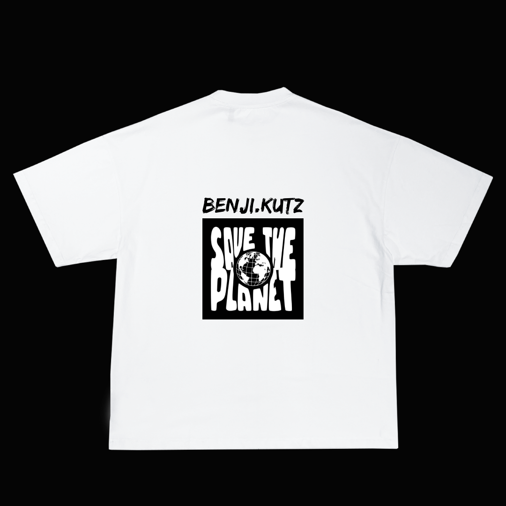

More Than a Haircut
At Benji Kutz Barbershop, we believe a haircut is more than just a fresh look. It's about confidence, dignity, connection, and community.


Helping Those Who Need It Most
Not everyone has the opportunity to visit a barbershop regularly. For some people, the cost of a haircut can be difficult to afford. That's why we want to use our skills to help people who may be struggling financially or going through difficult circumstances. With the support of our customers and donors, we aim to provide free or sponsored haircuts to people who need them. A simple haircut can make someone feel more confident when attending a job interview, starting school, meeting new people, or simply going about their day.


Supporting Young People
We believe that investing in young people means investing in the future of our community.
We want to use our skills to give back to people who may not always have access to the services and support they need.


Giving Back to the Community
- Our Goal Goes Beyond Haircuts -


As Benji Kutz Barbershop grows, we want to contribute towards community projects and initiatives that make a positive difference. This could include:
-Free haircut days-
-Community events-
-Support for people experiencing
financial hardship-
-Youth-focused initiatives-
-School and community projects-
-Supporting local causes
and organisations-
"We want to work with our community to identify where help is needed most"
How Your Donation Helps Us
Every donation makes a difference.
Your contribution can help us purchase supplies,
provide sponsored haircuts, organise community events,
and support people who may otherwise
go without these services.


You Don't Have to Donate to Make a Difference
Supporting our mission doesn't only mean donating money.
You can also help by:
-Telling someone about our community initiative
-Purchase a Tshirt/Merch
-Volunteering when opportunities become available
-Helping us connect with local organisations
Support Benji Kutz Barbershop
Your support allows us to turn our vision into action.
Every haircut builds confidence.
Every person we help makes our community stronger.
Donate NowThank you for helping us make a difference.
Benji Kutz Barbershop
More than a haircut. A community.